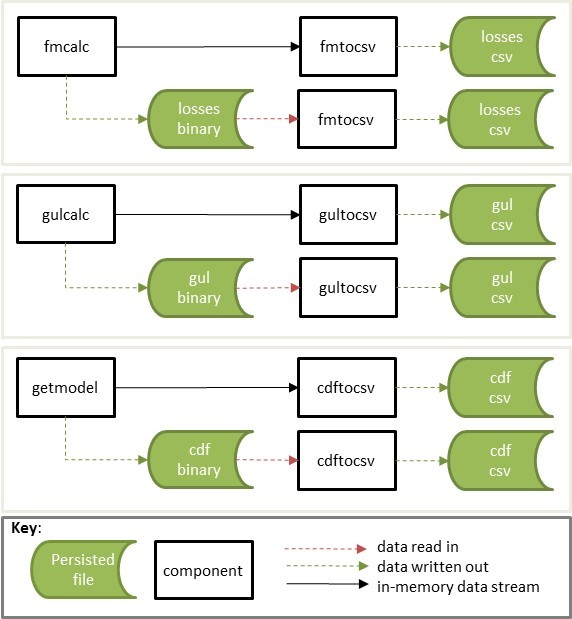

The following components convert the binary output of each calculation component to csv format;
Figure 1 shows the workflows for the data conversion components.

A component which converts the getmodel output stream, or binary file with the same structure, to a csv file.
| Byte 1 | Bytes 2-4 | Description |
|---|---|---|
| 0 | 1 | getmodel stdout |
A binary file of the same format can be piped into cdftocsv.
$ [stdin component] | cdftocsv > [output].csv
$ cdftocsv < [stdin].bin > [output].csv$ eve 1 1 1 | getmodel | cdftocsv > cdf.csv
$ cdftocsv < getmodel.bin > cdf.csv Csv file with the following fields;
| Name | Type | Bytes | Description | Example |
|---|---|---|---|---|
| event_id | int | 4 | Oasis event_id | 4545 |
| areaperil_id | int | 4 | Oasis areaperil_id | 345456 |
| vulnerability_id | int | 4 | Oasis vulnerability_id | 345 |
| bin_index | int | 4 | Damage bin index | 20 |
| prob_to | float | 4 | The cumulative probability at the upper damage bin threshold | 0.765 |
| bin_mean | float | 4 | The conditional mean of the damage bin | 0.45 |
A component which converts the gulcalc output stream, or binary file with the same structure, to a csv file.
| Byte 1 | Bytes 2-4 | Description |
|---|---|---|
| 1 | 1 | gulcalc stdout |
A binary file of the same format can be piped into gultocsv.
$ [stdin component] | gultocsv > [output].csv
$ gultocsv < [stdin].bin > [output].csv$ eve 1 1 1 | getmodel | gulcalc -S100 -C1 | gultocsv > gulcalc.csv
$ gultocsv < gulcalc.bin > gulcalc.csv Csv file with the following fields;
| Name | Type | Bytes | Description | Example |
|---|---|---|---|---|
| event_id | int | 4 | Oasis event_id | 4545 |
| item_id | int | 4 | Oasis item_id | 300 |
| sidx | int | 4 | Sample index | 10 |
| gul | float | 4 | The ground up loss value | 5675.675 |
A component which converts the fmcalc output stream, or binary file with the same structure, to a csv file.
| Byte 1 | Bytes 2-4 | Description |
|---|---|---|
| 2 | 1 | fmcalc stdout |
A binary file of the same format can be piped into fmtocsv.
$ [stdin component] | fmtocsv > [output].csv
$ fmtocsv < [stdin].bin > [output].csv$ eve 1 1 1 | getmodel | gulcalc -S100 -C1 | fmcalc | fmtocsv > fmcalc.csv
$ fmtocsv < fmcalc.bin > fmcalc.csv Same as fmcalc output or a binary file of the same format can be piped into fmtocsv.
Csv file with the following fields;
| Name | Type | Bytes | Description | Example |
|---|---|---|---|---|
| event_id | int | 4 | Oasis event_id | 4545 |
| prog_id | int | 4 | Oasis prog_id | 1 |
| layer_id | int | 4 | Oasis layer_id | 1 |
| output_id | int | 4 | Oasis output_id | 5 |
| sidx | int | 4 | Sample index | 10 |
| loss | float | 4 | The insured loss value | 5375.675 |